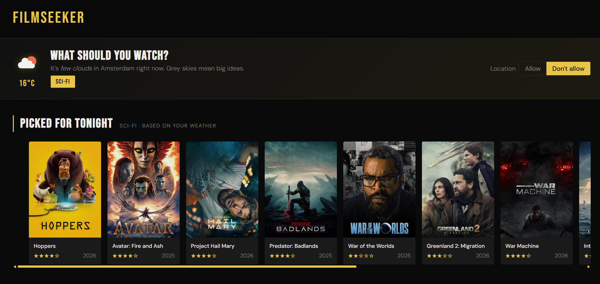
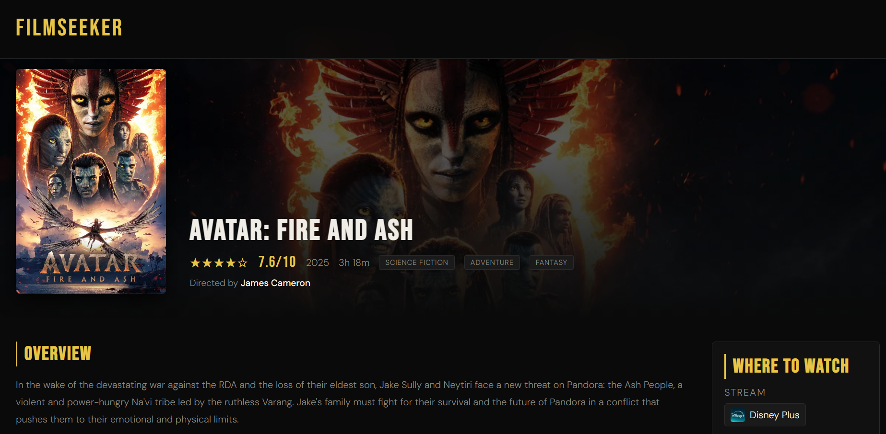

FilmSeekerMovie discovery platform.


FilmSeeker was a solo project for a course all about working with APIs and outside data sources. The brief was to combine multiple APIs into one cohesive experience, and I built it out of my own frustration with hopping between five different streaming apps just to find something to watch. The idea: search for movies, get recommendations based on the weather outside, and immediately see where you can actually stream them.
I started by digging into different APIs and figuring out how they'd actually work together. I ended up going with The Movie Database (TMDB) for all the film data, OpenWeather for live weather, and the browser's own Geolocation API to personalize things automatically. Before writing any code I sketched wireframes and tried out a few visual directions to lock down a look before diving in.
The core feature is the weather-based recommendations. Instead of just showing you what's popular, FilmSeeker leans into the mood of the day: rainy weather nudges you toward thrillers, sunny days pull up comedies and feel-good picks. Geolocation grabs your location automatically, that feeds into OpenWeather, and the recommended genre updates without you touching anything. Getting those two APIs talking to each other smoothly was probably the hardest part of the whole project, but it taught me a lot about async data and juggling multiple requests.
Each movie also gets its own detail page, pulled in dynamically by ID, with ratings, descriptions, and where to stream it. I built the nav and footer as reusable components too, so the codebase didn't turn into a mess of copy-pasted markup.
Past the functionality, I spent real time on the feel of it: a responsive layout, hover animations, and a horizontally scrolling movie carousel using CSS Scroll Snap for that smooth, snap-to-card feel. Small details, but they make the whole thing feel a lot less like a school project.
This one leveled up my understanding of APIs, async JavaScript, and browser APIs in general, and gave me a real taste of the messy parts too: rate limits, awkward data shapes, keeping state in sync. Biggest lesson though: get a solid foundation working first before you start bolting on features. Saved me a lot of headaches later in the project.